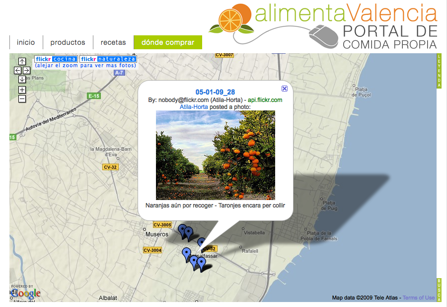
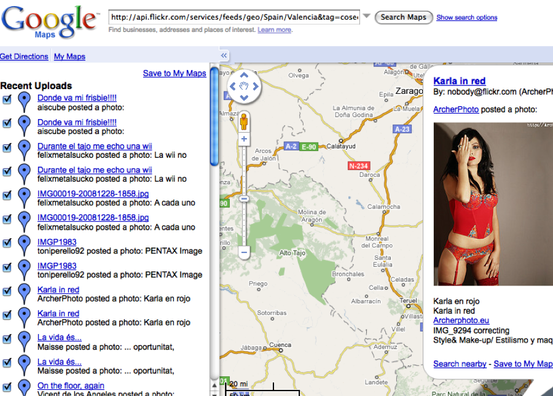
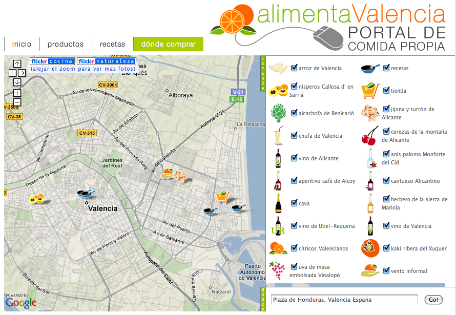
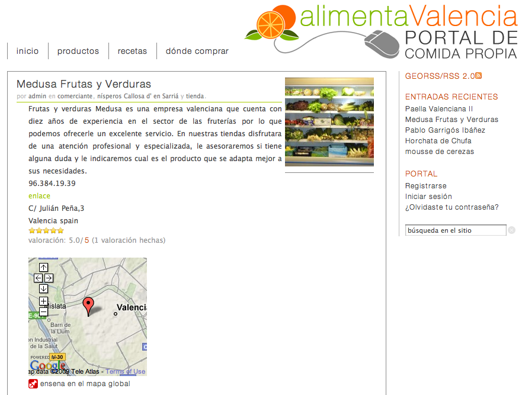
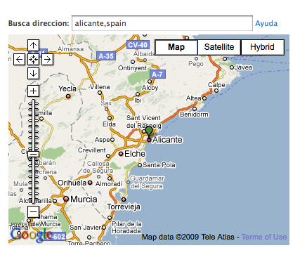

thesis in pictures
(much more fun)
Farm2.0 demonstrates an approach to manage user-generated geocontent pertaining to European protected designation of origin (PDO) food products. Wordpress, a popular open-source publishing platform, supplies the framework for a geographic content management system, or GeoCMS, to promote PDO products in the Spanish province of Valencia. The Wordpress platform is modified through a suite of plug-ins and customizations to create an extensible application that could be easily deployed in other regions and administrated cooperatively by distributed regulatory councils. Content, either regional recipes or map locations for vendors and farms, is available for syndication as a GeoRSS feed and aggregated with outside feeds in a dynamic web map.
 site blueprint
controlled vocabulary
system overview
styles
theme use
map symbols
Flickr geofeed overlay
site blueprint
controlled vocabulary
system overview
styles
theme use
map symbols
Flickr geofeed overlay
The overlay can be toggled on and off through the buttons to the upper left of the map window. One button brings up photos tagged comida (food), the other displays photos tagged cosecha (harvest), granja (farm), or naturaleza (nature).

permalink
permalink
unfiltered Flickr geofeed overlay
Without tag filtering, all geotagged photos from the Valencian Community will be aggregated by the map. This includes a range of subjects...

permalink
permalink
map of all posts
The map implements an interactive legend and address search. Both are collapsible for full-width map browsing.

permalink
permalink
maps in posts
Maps are also placed in post template. Clicking on the geotag icon takes the user to the map of all posts, centered on the post they came from.

permalink
permalink
geotagging UI
Users geotag content as they enter content throguh a TDO Mini Form. The form includes a GeoMashup widget for recording coordinate attributes for the post.

permalink
permalink